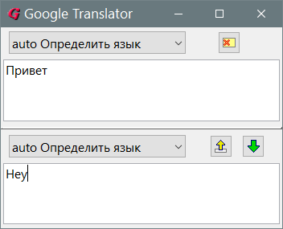

GoogleTranslator
Назначение
Переводчик Google.

Linux и Windows скомпилированы с одного исходника и имеют одинаковый функционал.
Описание ini-файла
[Set] ; секция основных параметров
Lang1 = ru ; ваш родной язык, включается в качестве пункта назначения перевода если в исходном тексте нет букв из LangDetect
Lang2 = en ; второй основной язык, включается в качестве пункта назначения перевода если в исходном тексте найдены буквы из LangDetect
LangDetect = аоеиуюяыэ ; (не действующий параметр) эти буквы являются критерием определения языка, это означает, что если в тексте есть хоть одно русское слово, то весь текст детектируется как русский, то есть нет количественного определения, поэтому при выделении текста на форумах важно не захватывать русские части интерфейса форума, которые принудят сделать направление перевода на английский.
Select1 = 0 ; выбор языка по номеру расположения пункта в первом раскрывающемся списке (пока выбор не сохраняется в ini при закрытии программы)
Select2 = 0 ; выбор языка по номеру расположения пункта во втором раскрывающемся списке
LangRange1 = 1040 ; верхний и нижний диапазон русского языка в юникоде 1040-1105. Если половина букв внутри диапазона, то текст детектируется как русский.
LangRange2 = 1105 ; --//--